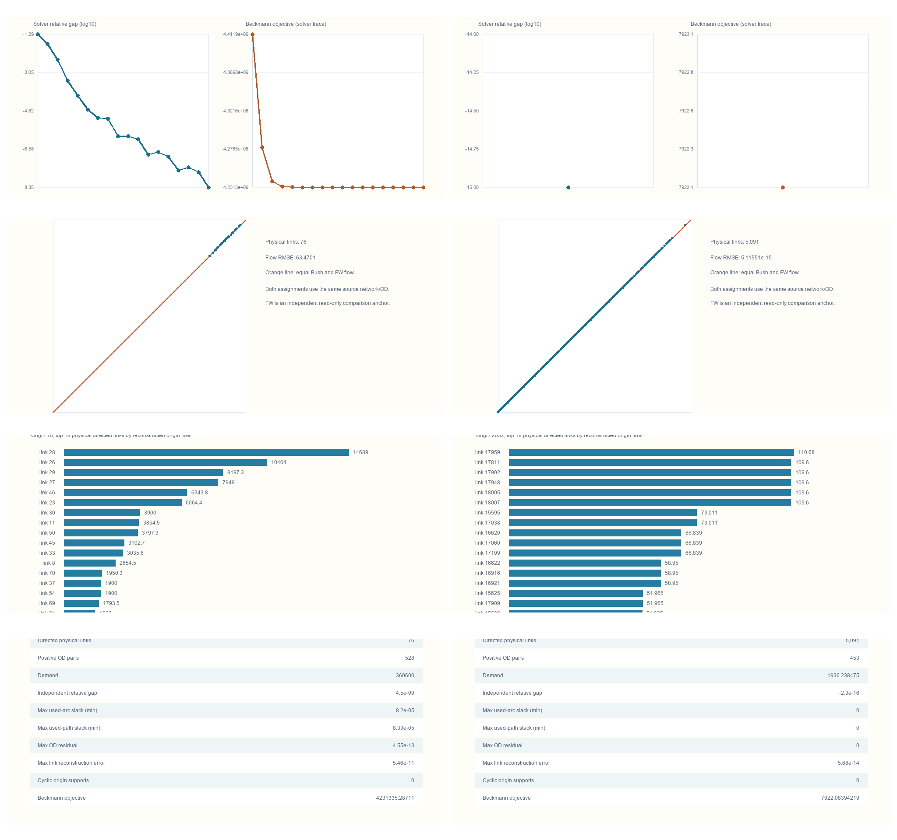

Origin-based Algorithm B on static BPR user equilibrium
The accepted static branch runs the official spartalab/tap-b Algorithm B executable on fixed-demand BPR/Beckmann instances. It is separate from the finite space–time fixed-cost, hard-capacity CG/Lagrangian/ADMM branch and from the retained FW and finite-path controls. TAPLab is the integration/verification framework, not a claim that it supplies its own mathematical Bush solver. Selected source and derived results.
Problem and frozen checks
For every directed physical link, the task-local contract keeps link_id, endpoints, capacity and the vdf_fftt, vdf_alpha, vdf_beta BPR fields without mixing distance/speed units. The objective is the Beckmann integral in the case's demand-unit minutes. Positive fixed OD must be conserved, with nonnegative path/link flow; the independent evaluator checks shortest-path gap, used-path and used-arc slack, origin conservation, aggregate flow agreement, and positive-flow acyclicity. FIRST THRU NODE=1 allows Boston's physical OD endpoints to be through nodes.
The frozen R2 numerical policy used solver gap 1e-8, evaluator gap gate 1e-4, 10,000 maximum iterations, 1,800 seconds, one batch, and RELATIVE GAP; max used-arc/path slack gate was 0.05 minute. The policy was fixed before Boston B0/B1. The official TAPLab Sioux adapter has no explicit 10,000-iteration override; its default maximum was nonbinding because the parity run stopped at 18 iterations. Official-adapter audit.
Accepted results
| Case | Adapter route | Accepted Beckmann objective | Independent relative gap | Physical links / positive ODs |
|---|---|---|---|---|
| Classic Sioux Falls | Official TAPLab adapter parity and task-local R2 run | 4,231,335.287110682 vehicle-min | 4.49840770553e-9 | 76 / 528 |
| Boston B0 interface | Task-local lossless adapter only | 707.057923071 vehicle-min | Checks passed in accepted private handoff | 5,091 / 26 |
| Boston B1 holdout | Task-local lossless adapter only | 7,922.083942188114 PCE-min | −2.29512461878e-16 (floating-point zero) | 5,091 / 453 |
Sioux's official TAPLab CLI and direct-callable results have zero physical-link-flow difference from accepted R2 and taplab verify certified the standard output. The Boston official converter was audited but not used for solving: its first-thru-node choice and four-decimal demand output violate the frozen problem contract. Its status is an input-conversion limitation, not a numerical Algorithm B result.
Reading the four figure families

Each column uses the same accepted R2 figure families in order: convergence, same-problem FW physical-link comparison, selected-origin reconstructed flow, independent verification. The Boston B1 convergence figure has one point because the saved low-congestion holdout met its criterion immediately; no additional trace was inferred. The Sioux and Boston objectives belong to different instances and demand units, so their magnitudes are not a performance ranking. SVG composition and source hashes.
The exported OD paths support reconstructed origin-link flow. Native merge, approach-proportion, restriction-update and backward-label state was not exported, so no figure or prose claims to show it. Boston B1's near-zero flow difference from same-problem FW is an agreement check in a low-congestion conditional cohort, not solver superiority, observed traffic or citywide validation.
Reproduction and limits
The TAPLab integration page separates the official Sioux CLI/verification route from the Boston task-local lossless route. Source-build and public-candidate scope are documented in the code directory. The publication update reused accepted artifacts and did not invoke any scientific solver.